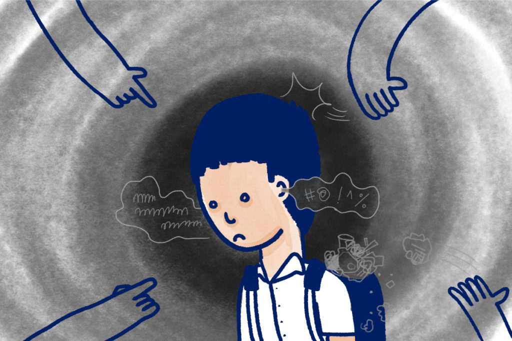

ป้องกันตนเอง ปัจจัยสำคัญที่เป็นสาเหตุของการติดสารเสพติด
1. ความอยากรู้อยากลอง ทั้งการอยากลองด้วยตัวเอง และการถูกกระตุ้นจากบุคคลภายนอก เช่น เพื่อน หรือคนใกล้ตัวที่ใช้ยาเสพติด 2. ครอบครัว การที่คนในครอบครัวมีการใช้ยาเสพติด หรือครอบครัวห่างเหินไม่มีความอบอุ่นส่งผลให้มีโอกาสเสี่ยงสูงที่เกิดการเลียนแบบหรือหันไปใช้ยาเสพติดเพื่อลดช่องว่างในจิตใจ
3. ความเครียด ส่งผลใหหันไปพึ่งพายาเสพติดเพื่อหลีกหนีจากปัญหาเหล่านั้นเป็นการชั่วคราว หรือต้องการบางสิ่งมายึดเหนี่ยวจิตใจทำให้อ่อนไหวไปกับการใช้ยา
4. สิ่งแวดล้อม สถานที่อยู่อาศัยที่เป็นแหล่งค้า และเสพยาเสพติด ทำให้ยาเสพติดถูกซื้อขายง่ายขึ้น หรือมีกลุ่มผู้ใช้ยาเสพติดมากขึ้นในชุมชน ก็นำไปสู่การลอกเลียนแบบ และการชักชวนได้
 |
การล่วงละเมิดทางเพศ (Sexual Harassment) คืออะไร?
Sexual Harassment หมายถึง พฤติกรรมที่ฝ่ายหนึ่งแสดงออกถึงนัยยะทางเพศ ทำให้เหยื่อรู้สึกไม่ดี ถูกคุกคาม ไม่ปลอดภัย หรือถูกลดทอนศักดิ์ศรีคุณค่าความเป็นมนุษย์ Sexual Harassment มีหลายประเภท คนส่วนใหญ่มักคิดว่าจะแสดงออกทางร่างกายเท่านั้น แต่จริงๆ แล้วมีอีกหลายรูปแบบซึ่งสร้างบาดแผลทางใจให้กับเหยื่อได้เช่นกัน
|  |
บูลลี่ (Bully) คือ การกลั่นแกล้งที่แสดงออกด้วยคำพูด หรือ พฤติกรรมที่ก้าวร้าวต่อผู้อื่น ซึ่งมักเกิดขึ้นในสังคมที่มีช่องว่างระหว่างผู้ที่มีพละกำลัง หรืออำนาจมากกว่าแสดงออกแก่ผู้ที่อ่อนแอกว่า และมีโอกาสเกิดขึ้นซ้ำๆ โดยพบการบูลลี่ในโรงเรียน และในที่ทำงานมาก นำไปสู่ปัญหาสภาพทางจิตใจ ที่ร้ายแรงได้ในอนาคต
ลักษณะการบูลลี่ในโลกที่เกิดขึ้นเป็นประจำ ประกอบด้วย 2 เงื่อนไขต่อไปนี้
1. การใช้กำลังกลั่นแกล้ง ด้วยการแสดงออกจากกลุ่มเด็กที่มีอำนาจ หรือมีพละกำลังที่แข็งแรง ด้วยการใช้กำลังทำให้ผู้อื่นเกิดความรู้สึกอับอายในที่สาธารณะ ด้วยการกลั่นแกล้งที่เปลี่ยนแปลงตามสถานการณ์ได้ตลอดเวลา
2. เกิดขึ้นซ้ำ ด้วยพฤติกรรมกลั่นแกล้งที่มีโอกาสเกิดขึ้นมากกว่า 1 ครั้ง